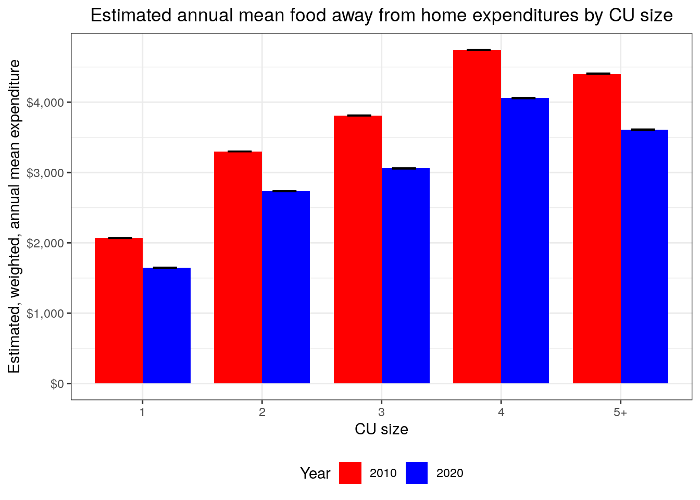
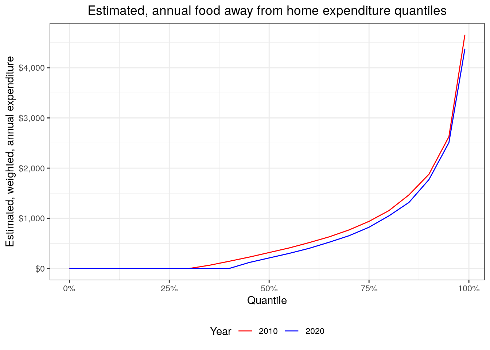
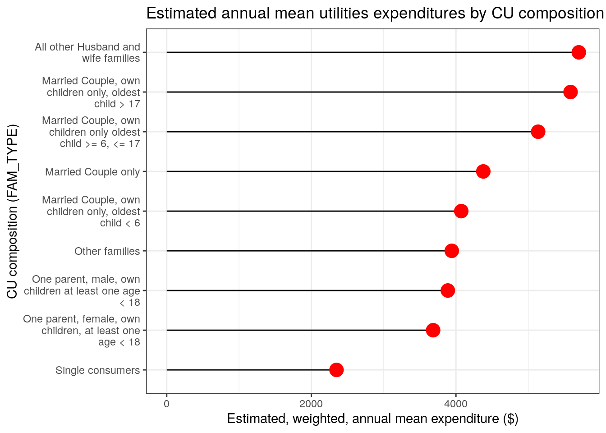

The purpose of cepumd is to make working with Consumer
Expenditure Surveys (CE) Public-Use Microdata (PUMD) easier toward
calculating mean, weighted, annual expenditures (henceforth “mean
expenditures”). The challenges cepumd seeks to address deal
primarily with pulling together the necessary data toward this end. Some
of the overarching ideas underlying the package are as follows:
cepumd does by defaultFirst a little history… The first Consumer Expenditure Survey happened in 1888 (https://www.bls.gov/opub/hom/cex/history.htm), it was first used to revise CPI weights in 1972-1973, and it has been collected on a monthly basis since 1979. For a little bit more detail on the history of the CE, check out the slide deck of a presentation delivered by Steve Henderson (former Chief of the Branch of Information and Analysis) and Adam Safir (current Division Chief of CE) called 130 Years of theConsumer Expenditure Surveys (CE): 1888 - 2018
From the CE home page:
“The Consumer Expenditure Surveys (CE) program provides data on expenditures, income, and demographic characteristics of consumers in the United States. The CE program provides these data in tables, LABSTAT database, news releases, reports, and public use microdata files.
CE data are collected by the Census Bureau for BLS in two surveys, the Interview Survey for major and/or recurring items and the Diary Survey for more minor or frequently purchased items. CE data are primarily used to revise the relative importance of goods and services in the market basket of the Consumer Price Index. The CE is the only Federal household survey to provide information on the complete range of consumers’ expenditures and incomes. Here is an overview of the CE program and its methods.”
Some important things to note are that expenditure data are collected
through two different survey instruments (Diary and Interview),
expenditure categories are organized hierarchichally, and data are
stored across thousands of files to which the CE provides access through
their website. Also, given the length of the program, it would be
difficult to harmonize data across all those years and files, so there
are some inconsistencies in the way data are stored, which
cepumd seeks to address (more on this further down).
Please visit the following pages to learn more about the CE program overall and CE PUMD more specifically.
cepumd seeks to address challenges in three categories:
data gathering/organization; managing data inconsistencies; and
calculating weighted, annual metrics.
ce_download(), store_ce_hg(), and
store_ce_dict()ce_hg()ce_hg()
and ce_uccs()ce_prepdata()ce_mean() or
expenditure quantile with ce_quantile()Source code and other package information is available at https://github.com/arcenis-r/cepumd
Estimates produced using PUMD, which is topcoded by the CE and has some records suppressed to protect respondent confidentiality, will not match the published estimates released by the CE in most cases. The CE’s published estimates are based on confidential data that are not topcoded nor have records suppressed. You can learn more at CE Protection of Respondent Confidentiality.
When calculating estimates for sub-samples or crosss-sections of
data it is best to stick to the combinations of variables that the CE
uses in it’s publication tables, e.g., income, geography, composition of
CU, size of CU. This is because CE data are collected using a stratified, random
sample (a.k.a., “representative sample”) and only analyses conducted
using the stratification variables are statistically valid. Using other
variables can be helpful to understand spending across different groups,
but unweighted estimates are likely more useful for this.
cepumd currently does not support unweighted estimates, but
data for such an analysis can be prepared using
ce_prepdata().
Quantiles should only be generated using data from 1 survey instrument as the samples for the Interview and Diary are different.
Check the expenditure category in the appropriate HG file to ensure that it is the category for which you intend to generate an estimate.
Store an HG object in the environment and call that directly in
ce_prepdata().
You can install the development version of cepumd from
GitHub, but you’ll first need the
devtools package:
if (!"devtools" %in% installed.packages()[, "Package"]) {
install.packages("devtools", dependencies = TRUE)
}
devtools::install_github("arcenis-r/cepumd")The workhorse of cepumd is
ce_prepdata(). It merges the household characteristics file
(FMLI/-D) with the corresponding expenditure tabulation file (MTBI/EXPD)
for a specified year, adjusts weights for months-in-scope and the number
of collection quarters, adjusts some cost values by their periodicity
factor (some cost categories are represented as annual figures and
others as quarterly). With the recent update it only requires the first
3 arguments to function: the year, the survey type, and one or more
valid UCCs. ce_prepdata() now creates all of the other
necessary objects within the function if not provided.
There are three functions for downloading the data and necessary documentation:
ce_download() downloads zip files for a given year and
survey instrument directly from the CE websitestore_ce_hg() downloads the zip file containing all HG
files maintained by the CE to the specified location.store_ce_dict() downloades the CE PUMD dictionary from
CE’s website to the specified location.There are two functions for wrangling hierarchical grouping data into more useable formats:
ce_hg() pulls the requested type of HG file (Interview,
Diary, or Integrated) for a specified year.ce_uccs() filters the HG file for the specified
expenditure category and returns either a data frame with only that
section of the HG file or the Universal Classification Codes (UCCs) that
make up that expenditure category.There are two functions that the user can use to calculate CE summary statistics:
ce_mean() calculates a mean expenditure, standard error
of the mean, coefficient of variation, and an aggregate
expenditure.ce_quantiles() calculates weighted expenditure
quantiles. It is important to note that calculating medians for
integrated expenditures is not recommended because the calculation
involves using weights from both the Diary and Survey instruments.There are two utility functions to make the workflow a bit easier:
ce_pumd_years() scrapes the main PUMD website to get a
vector of years for which PUMD are available. The vector is limited to
the years for which there are also HG files available.ce_cleanup() deletes a file containing CE data that may
only be necessary temporarily.The following are a few sample workflows that show how
cepumd can be used. Before jumping into those I’ll first
install and load the necessary pacakges.
# Store a vector of names of additional packages to be used
pkgs <- c("tidyverse", "devtools", "readxl", "knitr", "blsR", "janitor")
# Install packages from CRAN
invisible(
sapply(
pkgs, function(x) if (!x %in% installed.packages()) install.packages(x)
)
)
library(knitr)
library(readxl)
library(tidyverse)
library(cepumd)The following is an example of how someone might go about using
cepumd to calculate a 2021 annual, weighted estimate of
mean expenditures on pets for all of the U.S. using CE integrated data
without creating a separate directory for the data. This is just a quick
and easy calculation.
ce_prepdata(
2021,
integrated,
uccs = ce_hg(2021, integrated) %>% ce_uccs("Pets")
) %>%
ce_mean() %>%
kable(booktabs = TRUE)
#> [1] 2| agg_exp | mean_exp | se | cv |
|---|---|---|---|
| 101537912995 | 761.1465 | 50.24688 | 6.601473 |
Yup… that’s all it takes. I simply ran ce_prepdata()
with the year, the survey type, and the uccs I needed and piped that
directly into ce_mean().
But where are all the files? Zip files, etc.? They’re in my R session’s temporary directory under a sub-directory named “ce-data”.
list.files(file.path(tempdir(), "ce-data"))
#> character(0)I’ll go ahead and clean those files up really quickly.
ce_cleanup()
#> [1] "Nothing to clean up."
list.files(file.path(tempdir(), "ce-data"))
#> character(0)In this example I’ll calculate estimated annual expenditures on used
cars and trucks by urbanicity also for 2021. Once the data are prepped
with ce_data() I’ll just nest the data by urbanicity and
run ce_means() and ce_quantiles() on the
nested datasets.
First, I’ll get the portion of the stub file pertaining to used cars and trucks to ensure that I get the correct UCCs.
stub_2021 <- ce_hg(2021, integrated)
stub_2021 %>%
filter(str_detect(title, "[C|c]ars")) %>%
kable(booktabs = TRUE)| level | title | ucc | survey | factor |
|---|---|---|---|---|
| 4 | Cars and trucks, new | NEWCARS | G | 1 |
| 5 | New cars | 450110 | I | 1 |
| 4 | Cars and trucks, used | USEDCARS | G | 1 |
| 5 | Used cars | 460110 | I | 1 |
It looks like the expenditure category I want is “Cars and trucks, used”.
ce_uccs(stub_2021, "Cars and trucks, used", uccs_only = FALSE)
#> # A tibble: 3 × 5
#> level title ucc survey factor
#> <chr> <chr> <chr> <chr> <chr>
#> 1 4 Cars and trucks, used USEDCARS G 1
#> 2 5 Used cars 460110 I 1
#> 3 5 Used trucks 460901 I 1I notice from the “survey” column that all of the UCCs associated with used cars and trucks come from the Interview survey (as indicated by the “I”). So when I prepare my data I’ll only need data from the Interview.
cars_trucks <- ce_prepdata(
2021,
interview,
uccs = ce_uccs(stub_2021, "Cars and trucks, used", uccs_only = TRUE),
bls_urbn,
recode_variables = TRUE,
hg = stub_2021
)
cars_trucks %>%
nest(data = -bls_urbn) %>%
mutate(ce_mn_df = map(data, ce_mean)) %>%
select(-data) %>%
unnest(ce_mn_df) %>%
kable(booktabs = TRUE)| bls_urbn | agg_exp | mean_exp | se | cv |
|---|---|---|---|---|
| Urban | 310383802180 | 2472.104 | 152.2238 | 6.157661 |
| Rural | 30912654497 | 3844.600 | 683.8189 | 17.786476 |
Getting the annual, weighted estimate of the median (or another quantile) would be just as easy. Since I’m using interview data only here, this would be a good example. I’ll calculate the median and 99th percentiles for the overall sample rather than breaking it down by urbanicity.
ce_quantiles(cars_trucks, probs = c(0.5, 0.99)) %>% kable(booktabs = TRUE)| probs | quantile |
|---|---|
| 50% | 0 |
| 99% | 20000 |
ce_cleanup()In this last example I’m going to assume very little knowledge about the CE. I’d like to compare mean annual expenditures on food away from home between 2010 and 2020 by household size and I want to convert expenditures to 2022 dollars using the CPI. Also, I’m going to set up a directory on my local machine to put all the data and metadata files into.
First, I’ll set up that directory. I’ll put the directory path in a variable called “food_away_dir” for simplicity.
food_away_dir <- file.path("..", "food-away")
dir.create(food_away_dir)
list.files(food_away_dir)
#> character(0)Next, I want to make sure that there are data for my years of interest.
ce_pumd_years()
#> [1] 2021 2020 2019 2018 2017 2016 2015 2014 2013 2012 2011 2010 2009 2008 2007
#> [16] 2006 2005 2004 2003 2002 2001 2000 1999 1998 1997Now I want to store the CE HG files and data dictionary.
store_ce_hg(food_away_dir)
store_ce_dict(food_away_dir)Let’s take a look at what the files are called.
list.files(food_away_dir)
#> [1] "ce-dict.xlsx" "ce-stubs.zip"Next I want to see what the 2010 HG file looks like for 2010 for expenditures on “food away from home”. First I’ll download both HG files (2010 and 2020), then I’ll find the correct title in the 2010 HG file for my category.
hg_10 <- ce_hg(2010, integrated, food_away_dir)
hg_20 <- ce_hg(2020, integrated, food_away_dir)
hg_10 %>%
filter(str_detect(title, "[F|f]ood [A|a]way")) %>%
kable(booktabs = TRUE)| level | title | ucc | survey | factor |
|---|---|---|---|---|
| 3 | Food away from home | FOODAWAY | G | 1 |
hg_20 %>%
filter(str_detect(title, "[F|f]ood [A|a]way")) %>%
kable(booktabs = TRUE)| level | title | ucc | survey | factor |
|---|---|---|---|---|
| 3 | Food away from home | FOODAW | G | 1 |
It looks like the title is the same in both years, so I’ll store the title in a variable to use downstream.
food_away_title <- hg_10 %>%
filter(str_detect(title, "[F|f]ood [A|a]way")) %>%
pull(title)Now I’ll use that title to get the UCCs and see the entire table with “food away from home” expenditures (only for 2010 as a sample).
food_away_hg_10 <- ce_uccs(hg_10, food_away_title, uccs_only = FALSE)
food_away_hg_20 <- ce_uccs(hg_20, food_away_title, uccs_only = FALSE)
food_away_hg_10 %>% kable(booktabs = TRUE)| level | title | ucc | survey | factor |
|---|---|---|---|---|
| 3 | Food away from home | FOODAWAY | G | 1 |
| 4 | Meals at restaurants, carry outs and other | RESTCOAO | G | 1 |
| 5 | Lunch | LUNCH | G | 1 |
| 6 | Lunch at fast food, take-out, delivery, concession stands, buffet and cafeteria (other than employer and school cafeteria) | 190111 | D | 1 |
| 6 | Lunch at full service restaurants | 190112 | D | 1 |
| 6 | Lunch at vending machines and mobile vendors | 190113 | D | 1 |
| 6 | Lunch at employer and school cafeterias | 190114 | D | 1 |
| 5 | Dinner | DINNER | G | 1 |
| 6 | Dinner at fast food, take-out, delivery, concession stands, buffet and cafeteria (other than employer and school cafeteria) | 190211 | D | 1 |
| 6 | Dinner at full service restaurants | 190212 | D | 1 |
| 6 | Dinner at vending machines and mobile vendors | 190213 | D | 1 |
| 6 | Dinner at employer and school cafeterias | 190214 | D | 1 |
| 5 | Snacks and nonalcoholic beverages | SNKNABEV | G | 1 |
| 6 | Snacks and nonalcoholic beverages at fast food, take-out, delivery, concession stands, buffet and cafeteria (other than employer and school cafeteria) | 190311 | D | 1 |
| 6 | Snacks and nonalcoholic beverages at full service restaurants | 190312 | D | 1 |
| 6 | Snacks and nonalcoholic beverages at vending machines and mobile vendors | 190313 | D | 1 |
| 6 | Snacks and nonalcoholic beverages at employer and school cafeterias | 190314 | D | 1 |
| 5 | Breakfast and brunch | BRKFBRUN | G | 1 |
| 6 | Breakfast and brunch at fast food, take-out, delivery, concession stands, buffet and cafeteria (other than employer and school cafeteria) | 190321 | D | 1 |
| 6 | Breakfast and brunch at full service restaurants | 190322 | D | 1 |
| 6 | Breakfast and brunch at vending machines and mobile vendors | 190323 | D | 1 |
| 6 | Breakfast and brunch at employer and school cafeterias | 190324 | D | 1 |
| 4 | Food or board at school | 190901 | I | 1 |
| 4 | Catered affairs | 190902 | I | 1 |
| 4 | Food on out-of-town trips | 190903 | I | 1 |
| 4 | School lunches | 790430 | I | 1 |
| 4 | Meals as pay | 800700 | I | 1 |
Next I’ll use the dictionary to find the variable for household size.
It’s important to remember that the dictionary is stored as an “XLSX”
file. I’ll use functions from the readxl package to work
with the dictionary.
First I’ll take a look at the sheets in the dictionary.
ce_dict_file_path <- file.path(food_away_dir, "ce-dict.xlsx")
excel_sheets(ce_dict_file_path)
#> [1] "Cover" "Variables" "Codes "Now I’ll see what variables contain anything about the number of household members. To do that I’ll have to load the sheet from the dictionary containing the variable definitions. I also want to filter the variable data to only the FMLI where the “Last year” column is missing, i.e., the variable definition is still in use.
ce_variables <- read_excel(ce_dict_file_path, sheet = "Variables")
ce_variables %>%
filter(
str_detect(File, "FMLI"),
str_detect(
tolower(`Variable description`), "number of members"
)
) %>%
kable(booktabs = TRUE)| Survey | File | Variable Name | Variable description | Formula | Flag name | Section number | Section description | Section part | First year | First Quarter | Last quarter | Last year | Comment |
|---|---|---|---|---|---|---|---|---|---|---|---|---|---|
| INTERVIEW | FMLI | AS_COMP5 | Number of members under age 2 in CU | COUNT (AGE < 2) | AS_C_MP5 | NA | CU characteristics, income, weights, and summary level expenditures. | NA | 1984 | 1 | NA | NA | NA |
| INTERVIEW | FMLI | AS_COMP5 | Number of members under age 2 in CU | NA | AS_C_MP5 | NA | CU characteristics, income, weights, and summary level expenditures. | NA | 1980 | 1 | 4 | 1981 | NA |
| INTERVIEW | FMLI | FAM_SIZE | Number of Members in CU | NA | FAM__IZE | NA | CU characteristics, income, weights, and summary level expenditures. | NA | 1984 | 1 | NA | NA | NA |
| INTERVIEW | FMLI | FAM_SIZE | Number of Members in CU | NA | FAM__IZE | NA | CU characteristics, income, weights, and summary level expenditures. | NA | 1980 | 1 | 4 | 1981 | NA |
It looks like FAM_SIZE is the variable I want. I can see that this variable was used from 1980 through 1981 then was dropped and re-introduced in 1984 and has been in use since. So it looks like it’s available for my 2 years of interest. Next I’ll check whether the FAM_SIZE variable has any value codes associated with it. I’ll have to pull in the “Codes” sheet. (Check your spelling here.)
ce_codes <- read_excel(ce_dict_file_path, sheet = "Codes ")
ce_codes %>%
filter(File %in% "FMLI", Variable %in% "FAM_SIZE") %>%
kable(booktabs = TRUE)| Survey | File | Variable | Code value | Code description | First year | First quarter | Last year | Last quarter | Comment | …11 |
|---|
It looks like FAM_SIZE is not a coded variable (no observations in the “Codes” sheet), so it must be numeric. With all that, I’m ready to prepare my data. The first thing I’ll need are the UCCs for each of the two years in my analysis.
food_away_uccs_10 <- ce_uccs(food_away_hg_10, food_away_title, uccs_only = TRUE)
food_away_uccs_20 <- ce_uccs(food_away_hg_20, food_away_title, uccs_only = TRUE)
food_away_uccs_10
#> [1] "190111" "190112" "190113" "190114" "190211" "190212" "190213" "190214"
#> [9] "190311" "190312" "190313" "190314" "190321" "190322" "190323" "190324"
#> [17] "190901" "190902" "190903" "790430" "800700"food_away_uccs_20
#> [1] "190111" "190112" "190113" "190114" "190211" "190212" "190213" "190214"
#> [9] "190311" "190312" "190313" "190314" "190321" "190322" "190323" "190324"
#> [17] "190901" "190902" "190903" "790430" "800700"The lists of UCCs look identical, but I’ll keep both just to be cautious.
Next I’ll prepare the 2010 data and get a summary of the FAM_SIZE variable since it is a continuous variable.
food_away_data_10 <- ce_prepdata(
2010,
integrated,
food_away_uccs_10,
ce_dir = food_away_dir,
hg = food_away_hg_10,
fam_size
)
summary(food_away_data_10$fam_size)
#> Min. 1st Qu. Median Mean 3rd Qu. Max.
#> 1.000 1.000 2.000 2.667 4.000 14.000Since some households have as many as 14 people, I’ll create a FAM_SIZE label with any number greater than 4 taking on the value “5+”. Next, I’ll prepare the 2020 data and rowbind it with the 2010 data as well as create the “fam_size_label” variable. I’m also going to convert “ref_mo” and “ref_yr” to character to make it compatible with the CPI data that I’ll get later. I’ll also take a look at just a snippet of the data.
food_away_data_20 <- ce_prepdata(
2020,
integrated,
food_away_uccs_20,
ce_dir = food_away_dir,
hg = food_away_hg_20,
fam_size
)
food_away_comp_data <- food_away_data_10 %>%
mutate(year = "2010") %>%
bind_rows(food_away_data_20 %>% mutate(year = "2020")) %>%
mutate(
fam_size_label = if_else(fam_size > 4, "5+", as.character(fam_size)),
ref_yr = as.character(ref_yr)
)
food_away_comp_data %>%
select(survey, year, newid, finlwt21, cost, ucc, ref_yr, ref_mo) %>%
filter(!is.na(ucc)) %>%
group_by(year, survey) %>%
slice_sample(n = 3) %>%
ungroup() %>%
kable(booktabs = TRUE)| survey | year | newid | finlwt21 | cost | ucc | ref_yr | ref_mo |
|---|---|---|---|---|---|---|---|
| D | 2010 | 01077271 | 36400.79 | 58.5000 | 190114 | 2010 | 4 |
| D | 2010 | 01113982 | 20848.16 | 14.3000 | 190113 | 2010 | 9 |
| D | 2010 | 01072932 | 30438.06 | 234.0000 | 190114 | 2010 | 5 |
| I | 2010 | 02185554 | 15130.05 | 104.0000 | 790430 | 2010 | 3 |
| I | 2010 | 02293872 | 17276.10 | 60.0000 | 190903 | 2010 | 3 |
| I | 2010 | 02334032 | 24310.86 | 233.3333 | 800700 | 2010 | 9 |
| D | 2020 | 04374641 | 51933.91 | 319.8000 | 190321 | 2020 | 1 |
| D | 2020 | 04450382 | 55277.16 | 64.8700 | 190311 | 2020 | 3 |
| D | 2020 | 04362691 | 42724.20 | 76.4400 | 190321 | 2020 | 1 |
| I | 2020 | 04324332 | 30819.70 | 200.0000 | 190903 | 2020 | 4 |
| I | 2020 | 04506691 | 21062.71 | 35.0000 | 190903 | 2020 | 8 |
| I | 2020 | 04419663 | 31004.50 | 200.0000 | 190903 | 2020 | 11 |
Since I’m going to adjust for inflation, I also want to see the years in which expenditures were made just as an extra check.
food_away_comp_data %>%
drop_na(ref_yr) %>%
distinct(ref_yr) %>%
kable(booktabs = TRUE)| ref_yr |
|---|
| 2010 |
| 2020 |
This means I’ll need CPI data for the above years as well as 2022.
Next I’ll use the blsR package (https://github.com/groditi/blsR) to get CPI data. I’m
going to use the “All Urban Consumers (Current Series)” series, which
has series ID “CUUR0000SA0”.
N.B., the blsR package does have functions for tyding
data, but I’ve discovered that in this case at the time of this writing,
the data_as_table() and data_as_tidy_table()
were erroring out, so I’m using some purrr functions to do
the wrangling.
cpi_data <- blsR::get_series(
"CUUR0000SA0",
start_year = 2010,
end_year = 2022
) %>%
pluck("data") %>%
map(
~ list_flatten(.x) %>%
enframe() %>%
filter(!name %in% "footnotes") %>%
unnest(value) %>%
pivot_wider(everything(), values_from = "value", names_from = "name")
) %>%
list_rbind() %>%
rename(cpi = "value") %>%
mutate(month = match(periodName, month.name))
cpi_base <- cpi_data %>% filter(latest %in% "true")
cpi_data <- cpi_data %>% filter(year %in% c("2010", "2020"))
cpi_data %>% slice(1:10) %>% kable(booktabs = TRUE)| year | period | periodName | latest | cpi | month |
|---|---|---|---|---|---|
| 2020 | M12 | December | NA | 260.474 | 12 |
| 2020 | M11 | November | NA | 260.229 | 11 |
| 2020 | M10 | October | NA | 260.388 | 10 |
| 2020 | M09 | September | NA | 260.280 | 9 |
| 2020 | M08 | August | NA | 259.918 | 8 |
| 2020 | M07 | July | NA | 259.101 | 7 |
| 2020 | M06 | June | NA | 257.797 | 6 |
| 2020 | M05 | May | NA | 256.394 | 5 |
| 2020 | M04 | April | NA | 256.389 | 4 |
| 2020 | M03 | March | NA | 258.115 | 3 |
The base that I’m going to covert to is November 2022.
cpi_base %>% kable(booktabs = TRUE)| year | period | periodName | latest | cpi | month |
|---|---|---|---|---|---|
| 2022 | M11 | November | true | 297.711 | 11 |
Next I’m going to join the CPI data to the CE data and adjust the
“cost” variable for inflation. Note that I replace resulting missing
values in the “cost” variable with “0”. Missing values will result when
I multiply a cost of “0” by an adjustment factor and
ce_mean() will not function with missing values.
food_away_comp_data <- food_away_comp_data %>%
left_join(
select(cpi_data, year, month, cpi),
by = c("ref_yr" = "year", "ref_mo" = "month")
) %>%
mutate(
base_cpi = pull(cpi_base, cpi),
across(c(base_cpi, cpi), as.numeric),
cost = cost * (base_cpi / cpi) %>% replace_na(0)
)
food_away_comp_data %>%
select(survey, year, newid, finlwt21, cost, ucc, ref_yr, ref_mo) %>%
filter(!is.na(ucc)) %>%
group_by(year, survey) %>%
slice_sample(n = 3) %>%
ungroup() %>%
kable(booktabs = TRUE)| survey | year | newid | finlwt21 | cost | ucc | ref_yr | ref_mo |
|---|---|---|---|---|---|---|---|
| D | 2010 | 01153501 | 33879.965 | 277.70558 | 190211 | 2010 | 11 |
| D | 2010 | 01071752 | 27920.376 | 105.00903 | 190111 | 2010 | 4 |
| D | 2010 | 01152282 | 34111.184 | 40.83493 | 190321 | 2010 | 11 |
| I | 2010 | 02313852 | 13074.800 | 109.03218 | 190903 | 2010 | 9 |
| I | 2010 | 02244223 | 18729.821 | 13.64533 | 190903 | 2010 | 5 |
| I | 2010 | 02252092 | 11552.995 | 68.22663 | 190903 | 2010 | 5 |
| D | 2020 | 04473832 | 126457.798 | 103.40211 | 190321 | 2020 | 4 |
| D | 2020 | 04678152 | 114644.168 | 2185.67974 | 190322 | 2020 | 12 |
| D | 2020 | 04444432 | 6478.887 | 246.11872 | 190111 | 2020 | 2 |
| I | 2020 | 04430893 | 33312.490 | 731.73510 | 190903 | 2020 | 10 |
| I | 2020 | 04618351 | 17644.390 | 365.86755 | 190903 | 2020 | 10 |
| I | 2020 | 04286004 | 18755.279 | 103.41137 | 190903 | 2020 | 7 |
The next step is to calculate means, for which I’ll use some more Tidyverse functions.
food_away_means <- food_away_comp_data %>%
nest(data = -c(year, fam_size_label)) %>%
mutate(ce_mn_df = map(data, ce_mean)) %>%
select(-data) %>%
unnest(ce_mn_df) %>%
mutate(lower = mean_exp - cv, upper = mean_exp + cv)
food_away_means %>% kable(booktabs = TRUE)| year | fam_size_label | agg_exp | mean_exp | se | cv | lower | upper |
|---|---|---|---|---|---|---|---|
| 2010 | 2 | 130420221196 | 3299.820 | 98.42922 | 2.982866 | 3296.838 | 3302.803 |
| 2010 | 3 | 67021069687 | 3810.955 | 183.66110 | 4.819293 | 3806.136 | 3815.774 |
| 2010 | 1 | 72428285424 | 2067.680 | 85.10479 | 4.115956 | 2063.564 | 2071.796 |
| 2010 | 5+ | 57318822679 | 4404.588 | 257.43849 | 5.844780 | 4398.743 | 4410.433 |
| 2010 | 4 | 74679749487 | 4742.988 | 202.09679 | 4.260960 | 4738.727 | 4747.248 |
| 2020 | 1 | 64576900272 | 1646.821 | 81.17216 | 4.929022 | 1641.892 | 1651.750 |
| 2020 | 2 | 118826976839 | 2734.484 | 127.43499 | 4.660295 | 2729.823 | 2739.144 |
| 2020 | 4 | 66450879297 | 4058.404 | 255.44176 | 6.294144 | 4052.110 | 4064.698 |
| 2020 | 3 | 59005969584 | 3058.002 | 197.12332 | 6.446147 | 3051.556 | 3064.448 |
| 2020 | 5+ | 47067346009 | 3607.071 | 318.43740 | 8.828144 | 3598.243 | 3615.899 |
Plotting these data would be pretty straightforward, as well.
food_away_means %>%
ggplot(aes(x = fam_size_label, y = mean_exp, fill = year, group = year)) +
geom_bar(stat = "identity", position = "dodge", width = 0.8) +
geom_errorbar(
aes(ymin = lower, ymax = upper),
width = 0.4,
position = position_dodge(0.75)
) +
scale_fill_manual(values = c("red", "blue")) +
scale_y_continuous(labels = scales::dollar) +
labs(
title =
"Estimated annual mean food away from home expenditures by CU size",
x = "CU size",
y = "Estimated, weighted, annual mean expenditure",
fill = "Year"
) +
theme_bw() +
theme(plot.title = element_text(hjust = 0.5), legend.position = "bottom")
Here we can see that on an inflation-adjusted basis, households of all sizes had higher expenditures on food away from home in 2010 than they did in 2020.
Now I’ll generate a plot of the expenditures at each weighted, annual, estimated quantile (from 0.01 through 0.99, by 0.01) for the same years, but only using Diary data, since most of the UCCs (16 out of 21) in the “food away from home” category come from the Diary. I’ll also make sure that the Diary files are in my data directory first.
ce_download(2010, diary, food_away_dir)
ce_download(2020, diary, food_away_dir)
food_away_comp_quantiles <- map2(
c(2010, 2020),
c("diary10.zip", "diary20.zip"),
~ ce_prepdata(
.x,
diary,
ce_hg(.x, diary) %>% ce_uccs(food_away_title),
ce_dir = food_away_dir,
dia_zp = .y,
hg = ce_hg(.x, diary)
) %>%
mutate(year = .x, ref_yr = as.character(ref_yr))
) %>%
list_rbind() %>%
left_join(
select(cpi_data, year, month, cpi),
by = c("ref_yr" = "year", "ref_mo" = "month")
) %>%
mutate(
base_cpi = pull(cpi_base, cpi),
across(c(base_cpi, cpi), as.numeric),
cost = cost * (base_cpi / cpi) %>% replace_na(0)
) %>%
mutate(year = factor(year)) %>%
nest(data = -year) %>%
mutate(
fa_qtile = map(data, ce_quantiles, probs = c(seq(0, 0.95, by = 0.05), 0.99))
) %>%
select(-data) %>%
unnest(fa_qtile) %>%
mutate(probs = parse_number(probs) / 100)
food_away_comp_quantiles %>%
ggplot(aes(x = probs, y = quantile, group = year, color = year)) +
geom_line() +
scale_color_manual(values = c("red", "blue")) +
scale_x_continuous(labels = scales::percent) +
scale_y_continuous(labels = scales::dollar) +
labs(
title =
"Estimated, annual food away from home expenditure quantiles",
x = "Quantile",
y = "Estimated, weighted, annual expenditure",
color = "Year"
) +
theme_bw() +
theme(plot.title = element_text(hjust = 0.5), legend.position = "bottom")
ce_cleanup(food_away_dir)Interestingly the expenditures don’t appear to have changed much between 2010 and 2020 across quantiles on an inflation-adjusted basis, but we can see that across all quantiles, CU’s spent less in 2020 than they did in 2010 on food away from home, which is consistent with the means that we calculated above. There are a lot of 0-value reported expenditures, though, in the CE on food away from home. Unfortunately, I can’t perform an analysis using only respondents that did have expenditures in this category, i.e., dropping the 0’s, because whether someone had an expenditure on food away from home is not one of the variables used for generating the survey weights. In other words, the analysis can be done, but it would not be statistically valid and I definitely wouldn’t be able to infer from it. This is my cautionary note to anyone using this package who might use it in a way that is not statistically sound. Please visit the CE’s website and read the CE PUMD Getting Started Guide for more information.
In this workflow I’m going to calculate estimated mean utilities expenditures for 2015 using integrated data by CU composition using the FAM_TYPE variable. In this case I’m going to start by looking at the codes for that variable to show how one might run into an inconsistency in code definitions across survey instruments. First I’m going to set up a sub-directory in my temporary directory and store what I’ll need to get started.
data_dir <- file.path(tempdir(), "ce-utilities-data")
dir.create(data_dir)
store_ce_dict(data_dir, "ce-data-dictionary.xlsx")
store_ce_hg(data_dir, "ce-stubs.zip")
list.files(data_dir)
#> [1] "ce-data-dictionary.xlsx" "ce-stubs.zip"Now I can look at the code descriptions for the “FAM_TYPE” variable in the dictionary.
ce_codes <- read_excel(
file.path(data_dir, "ce-data-dictionary.xlsx"),
sheet = "Codes "
) %>%
janitor::clean_names() %>%
select(survey:last_quarter)
ce_codes %>% filter(
variable %in% "FAM_TYPE",
first_year <= 2015,
(last_year >= 2015 | is.na(last_year)),
code_value %in% c("3", "5", "7")
) %>%
select(survey, code_value, code_description) %>%
arrange(code_value, survey) %>%
kable(booktabs = TRUE)| survey | code_value | code_description |
|---|---|---|
| DIARY | 3 | Married couple, own children only, oldest child > 6, < 18 |
| INTERVIEW | 3 | Married Couple, own children only oldest child >= 6, <= 17 |
| DIARY | 5 | All other Married couple families |
| INTERVIEW | 5 | All other Husband and wife families |
| DIARY | 7 | One parent, female, own children, at least one age < 18 |
| INTERVIEW | 7 | One parent, female, own children, at least one age < 18 |
The code descriptions for these 3 code values are different across instruments. To resolve this I’m going to create a table containing only codes from the Interview survey.
fam_type_codes <- ce_codes %>%
filter(
variable %in% "FAM_TYPE",
first_year <= 2015,
(last_year >= 2015 | is.na(last_year))
)
codes2keep <- fam_type_codes %>%
filter(survey %in% "INTERVIEW") %>%
select(code_value, code_description)
fam_type_codes <- fam_type_codes %>%
select(-code_description) %>%
left_join(codes2keep, by = "code_value") %>%
relocate(code_description, .after = code_value)
fam_type_codes %>%
filter(code_value %in% c("3", "5", "7")) %>%
select(survey, code_value, code_description) %>%
arrange(code_value, survey) %>%
kable(booktabs = TRUE)| survey | code_value | code_description |
|---|---|---|
| DIARY | 3 | Married Couple, own children only oldest child >= 6, <= 17 |
| INTERVIEW | 3 | Married Couple, own children only oldest child >= 6, <= 17 |
| DIARY | 5 | All other Husband and wife families |
| INTERVIEW | 5 | All other Husband and wife families |
| DIARY | 7 | One parent, female, own children, at least one age < 18 |
| INTERVIEW | 7 | One parent, female, own children, at least one age < 18 |
Now the codes are consistent across survey instruments and I can use
this codebook in my call to ce_prepdata() using the
“own_codebook” argument. Then I’ll pass that to ce_mean()
per usual.
Next I’ll get some information about how utilities expenditures are organized using the stub file.
hg_15 <- ce_hg(2015, integrated, data_dir, "ce-stubs.zip")
hg_15 %>% filter(str_detect(title, "[U|u]tilities")) %>% kable(booktabs = TRUE)| level | title | ucc | survey | factor |
|---|---|---|---|---|
| 3 | Utilities, fuels, and public services | UTILS | G | 1 |
The expenditure category associated with utilities is “Utilities, fuels, and public services”. I’ll store that title to work with later and narrow down the section of the stub file that includes only these expenditures.
utilities_title <- hg_15 %>%
filter(str_detect(title, "[U|u]tilities")) %>%
pull(title)
utilities_hg <- ce_uccs(hg_15, expenditure = utilities_title, uccs_only = FALSE)
utilities_hg %>% kable(booktabs = TRUE)| level | title | ucc | survey | factor |
|---|---|---|---|---|
| 3 | Utilities, fuels, and public services | UTILS | G | 1 |
| 4 | Natural gas | NATRLG | G | 1 |
| 5 | Utility-natural gas (renter) | 260211 | I | 1 |
| 5 | Utility-natural gas (owned home) | 260212 | I | 1 |
| 5 | Utility-natural gas (owned vacation) | 260213 | I | 1 |
| 5 | Utility-natural gas (rented vacation) | 260214 | I | 1 |
| 4 | Electricity | ELECTR | G | 1 |
| 5 | Electricity (renter) | 260111 | I | 1 |
| 5 | Electricity (owned home) | 260112 | I | 1 |
| 5 | Electricity (owned vacation) | 260113 | I | 1 |
| 5 | Electricity (rented vacation) | 260114 | I | 1 |
| 4 | Fuel oil and other fuels | OTHRFU | G | 1 |
| 5 | Fuel oil | FUELOI | G | 1 |
| 6 | Fuel oil (renter) | 250111 | I | 1 |
| 6 | Fuel oil (owned home) | 250112 | I | 1 |
| 6 | Fuel oil (owned vacation) | 250113 | I | 1 |
| 6 | Fuel oil (rented vacation) | 250114 | I | 1 |
| 5 | Coal, wood, and other fuels | CLWDOT | G | 1 |
| 6 | Coal, wood, other fuels (renter) | 250911 | I | 1 |
| 6 | Coal, wood, other fuels (owned home) | 250912 | I | 1 |
| 6 | Coal, wood, other fuels (owned vacation) | 250913 | I | 1 |
| 6 | Coal, wood, other fuels (rented vacation) | 250914 | I | 1 |
| 5 | Bottled gas | BOTTLG | G | 1 |
| 6 | Gas, btld/tank (renter) | 250211 | I | 1 |
| 6 | Gas, btld/tank (owned home) | 250212 | I | 1 |
| 6 | Gas, btld/tank (owned vacation) | 250213 | I | 1 |
| 6 | Gas, btld/tank (rented vacation) | 250214 | I | 1 |
| 4 | Telephone services | PHONE | G | 1 |
| 5 | Residential phone service, VOIP, and phone cards | RESPHO | G | 1 |
| 6 | Phone cards | 270104 | I | 1 |
| 6 | Residential telephone including VOIP | 270106 | I | 1 |
| 5 | Cellular phone service | 270102 | I | 1 |
| 4 | Water and other public services | WATER | G | 1 |
| 5 | Water and sewerage maintenance | SEWER | G | 1 |
| 6 | Water/sewer maint. (renter) | 270211 | I | 1 |
| 6 | Water/sewer maint. (owned home) | 270212 | I | 1 |
| 6 | Water/sewer maint. (owned vacation) | 270213 | I | 1 |
| 6 | Water/sewer maint. (rented vacation) | 270214 | I | 1 |
| 5 | Trash and garbage collection | TRASH | G | 1 |
| 6 | Trash/garb. coll. (renter) | 270411 | I | 1 |
| 6 | Trash/garb. coll. (owned home) | 270412 | I | 1 |
| 6 | Trash/garb. coll. (owned vacation) | 270413 | I | 1 |
| 6 | Trash/garb. coll. (rented vacation) | 270414 | I | 1 |
| 5 | Septic tank cleaning | SEPTAN | G | 1 |
| 6 | Septic tank clean. (renter) | 270901 | I | 1 |
| 6 | Septic tank clean. (owned home) | 270902 | I | 1 |
| 6 | Septic tank clean. (owned vacation) | 270903 | I | 1 |
| 6 | Septic tank clean. (rented vacation) | 270904 | I | 1 |
I also want to know what survey instruments the expenditures are collected through for published estimates. My stub file is the integrated stub file, so I should see both “I” and “D” in the survey colum of the stub file if expenditures are collected through both instruments.
utilities_hg %>% distinct(survey) %>% kable(booktabs = TRUE)| survey |
|---|
| G |
| I |
It seems utlities expenditures are collected only through the Interview survey, so I’ll only need to download Interview data files.
ce_download(2015, interview, data_dir)Now I can go ahead and calculate estimates.
fam_type_utilities <- ce_prepdata(
2015,
interview,
ce_uccs(utilities_hg, expenditure = utilities_title, uccs_only = TRUE),
recode_variables = TRUE,
own_codebook = fam_type_codes,
ce_dir = data_dir,
int_zp = "intrvw15.zip",
hg = utilities_hg,
fam_type
) %>%
nest(data = -fam_type) %>%
mutate(ce_mean_df = map(data, ce_mean)) %>%
select(-data) %>%
unnest(ce_mean_df)
fam_type_utilities %>% arrange(fam_type) %>% kable(booktabs = TRUE)| fam_type | agg_exp | mean_exp | se | cv |
|---|---|---|---|---|
| Married Couple only | 122623482952 | 4378.377 | 76.25699 | 1.741673 |
| Married Couple, own children only, oldest child < 6 | 21592090354 | 4073.529 | 241.48233 | 5.928087 |
| Married Couple, own children only oldest child >= 6, <= 17 | 73899626502 | 5136.781 | 132.53306 | 2.580080 |
| Married Couple, own children only, oldest child > 17 | 53687574363 | 5585.027 | 190.15164 | 3.404668 |
| All other Husband and wife families | 26767356778 | 5699.177 | 331.83382 | 5.822487 |
| One parent, male, own children at least one age < 18 | 4647315390 | 3887.863 | 532.21229 | 13.689069 |
| One parent, female, own children, at least one age < 18 | 22862016917 | 3684.480 | 237.12762 | 6.435851 |
| Single consumers | 88002147354 | 2348.182 | 40.59815 | 1.728919 |
| Other families | 84986387660 | 3942.345 | 122.97865 | 3.119429 |
And finally, a quick lollipop plot.
fam_type_utilities %>%
mutate(fam_type = fct_reorder(fam_type, mean_exp)) %>%
ggplot(aes(x = mean_exp, y = fam_type, mean_exp)) +
geom_segment(aes(x = 0, xend = mean_exp, yend = fam_type)) +
geom_point(color = "red", size = 5) +
scale_y_discrete(labels = function(x) str_wrap(x, width = 25)) +
scale_x_continuous(labels = scales::dollar) +
labs(
y = "CU composition (FAM_TYPE)",
x = "Estimated, weighted, annual mean expenditure",
title =
"Estimated annual mean utilities expenditures by CU composition"
) +
theme_bw()
ce_cleanup(data_dir)